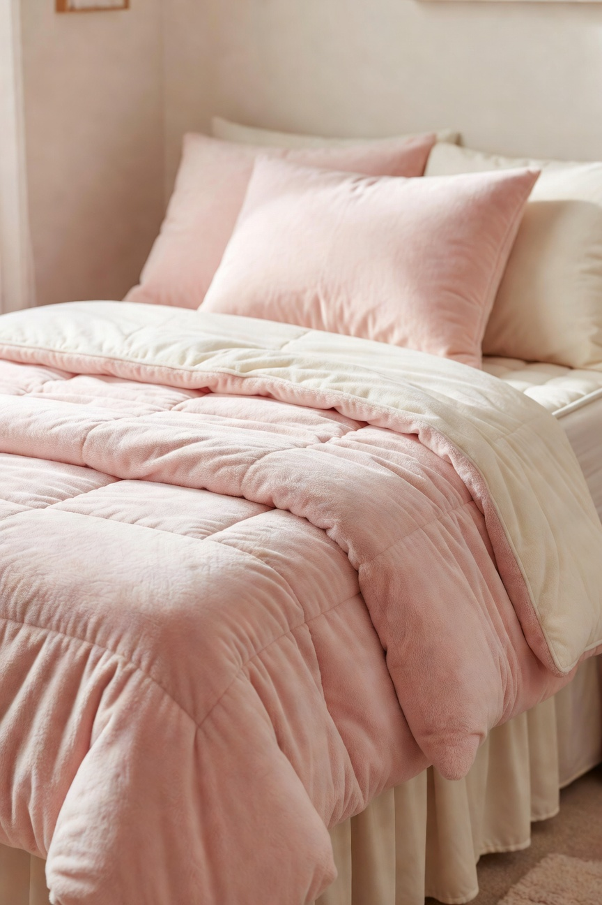
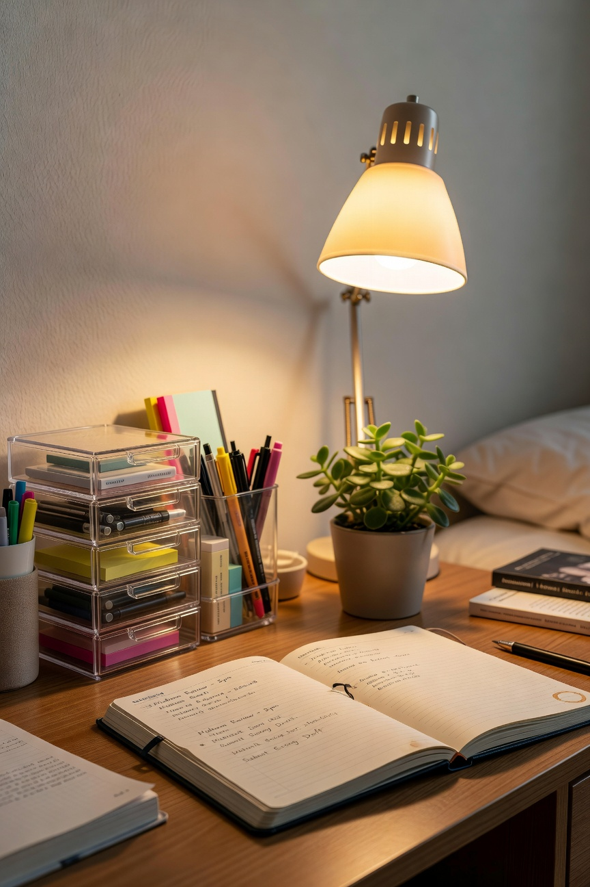
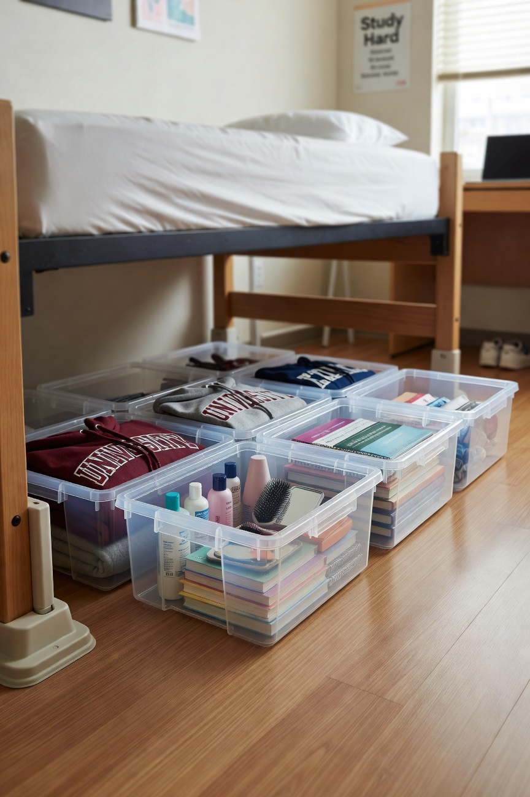
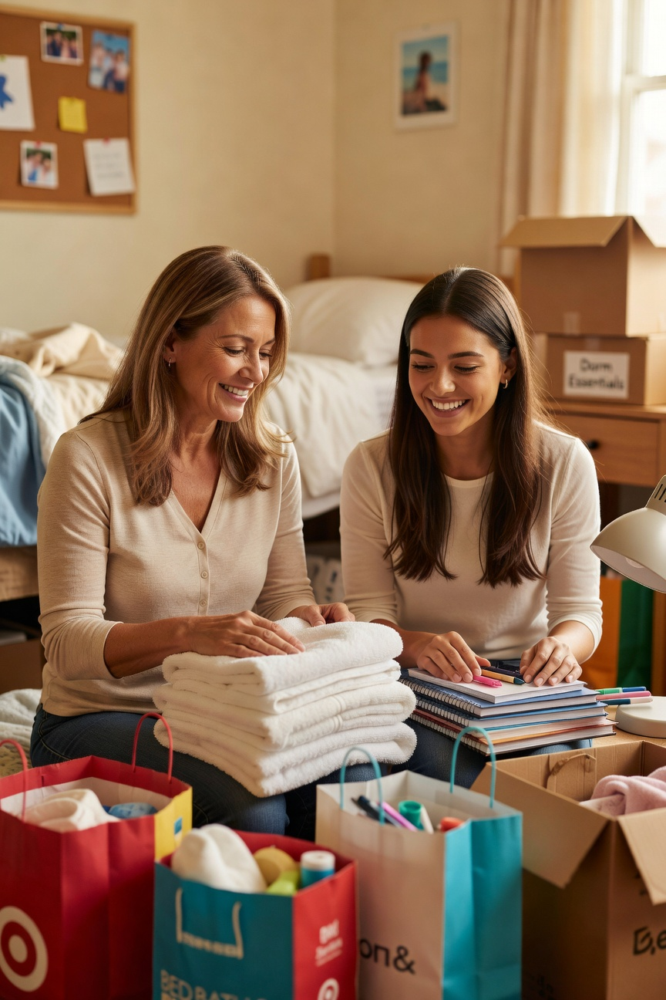

E graduated high school. She is going to college. I am so incredibly proud of her and I am also, if I am being honest, not entirely handling this well.
What I have done instead of processing my feelings is channel everything into making sure she has exactly what she needs for her dorm room. This is how I show love. Organization and preparation are my love languages and this is a very important moment to deploy both of them.
We did the entire dorm shopping list at Walmart and I am sharing everything here because the number of people who have asked me “where do you even start” with dorm prep is significant and I have thoughts.
Start With the Dorm Dimensions
Before you buy anything, get the measurements of the room and the specific bed size. College dorm beds are often extra long twin -- not the same as a regular twin, and regular twin bedding will not fit properly. Many schools post room dimensions on their housing websites. Get this information first. It will save you at least one return trip.
Bedding

Extra long twin sheets, a comfortable comforter, at least two sets of sheets so she can rotate without scrambling to do laundry, and a good pillow. Walmart has a solid selection of extra long twin bedding at prices significantly better than the specialty college stores. E picked her own pattern. It is very her. I love it.
A mattress topper. Dorm mattresses are notoriously uncomfortable and sleep quality matters enormously for a college student. This is not optional in my opinion. We got one at Walmart that compresses for easy transport and E was very pleased with it.
The Study Space

A good desk lamp. Dorm overhead lighting is not sufficient for studying and good light matters for focus and eye strain. Also a comfortable cushion for whatever desk chair the dorm provides. Small bins and drawer organizers for the desk surface. The organizational instinct is strong in our family and E’s desk will be the most organized one on her floor. I say this with complete confidence.
Under the Bed Storage

Dorm rooms are small. Under-bed space is valuable. Flat storage bins that fit under a raised dorm bed plus a set of bed risers to create more of that space -- this combination effectively doubles E’s storage in a room that does not have much. We got everything we needed for this at Walmart.
The Small Things That Matter Most
A first aid kit stocked with the basics -- pain reliever, cold medicine, bandages. She should not have to make a sick day trip to find these things. A power strip with surge protector because dorms have limited outlets and she has many things to charge. Laundry supplies and an easy-to-carry mesh laundry bag. More hangers than you think she will need.
The Part I Was Not Ready For

We did all this shopping together. Just E and me, one Saturday, going through the list. She was patient with my opinions about mattress toppers and let me add the first aid kit without argument. At the end she said “thanks Mom, this was actually really fun” and I almost cried in the home goods aisle.
She is going to be great. I know this. And she is going to be great with excellent dorm room organization, which is all I can really do at this point.
-- Christin Marie